Monitor - Visual Inspection Lab
Note
Please follow the Action statements to navigate the steps and perform the lab.
Review High Anomalies
I'm the Remote Operational Support Manager that needs to view my assets across multiple cities worldwide.
Monitor provides a single place to monitor all my mission critical assets around the globe from a single dashboard.
Action: Open Maximo Application Suite and select Monitor Application. Open Monitor in the left Monitor Tab.
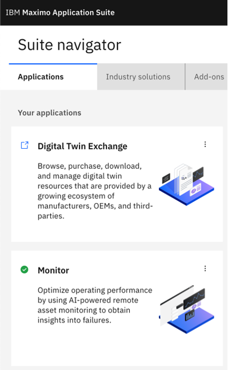 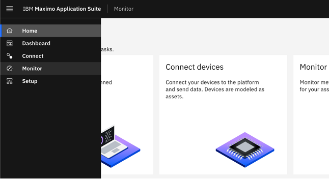
Monitor has the data collected by devices organized by asset type. Operational support has some asset information in Monitor that was collected via Historians from SCADA or from devices that were connected to the IOT Platform.
This facility has asset groups of sedimentation tanks and pumps. There is a summary dashboard for the asset type and instance dashboards for each asset.
Action: Navigate to Entity called SedimentationTanks_LI and select the “SedimentationTanks_LI” tab
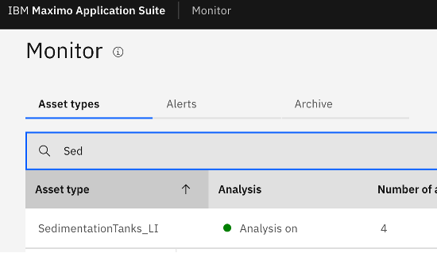
Tank Monitoring/Inspecting
I need to view cleanliness of sedimentation tanks in my facility. Over a period of time, tanks could build fungi or collect debris from environment or cases have been known for animals accidentally falling into our tanks.
Every tank in our facility is constantly monitored by cameras. The feed from cameras are analyzed every hour by Maximo Visual Inspection’s AI model and uploaded as IoT events. Maximo Monitor maps and plots these details on the dashboards as assets. Rules are triggered to generate alerts. Monitor provides a single dashboard to review and act on alerts for all tanks around the facility. The summary dashboard tells me that Tank 2 is showing alerts.
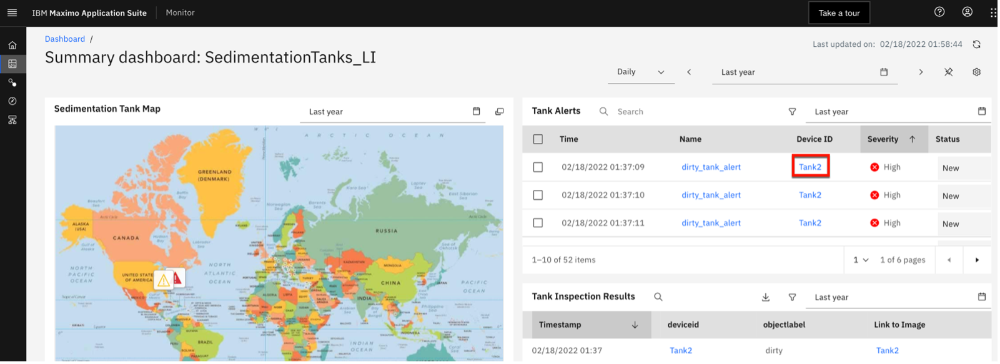
I navigate to the Tank 2 instance dashboard to review and act on alerts for the tank.
Action: Navigate to the Tank2 instance dashboard, select the “Tank Dashboard tab”, then filter on severity of alerts in alert card
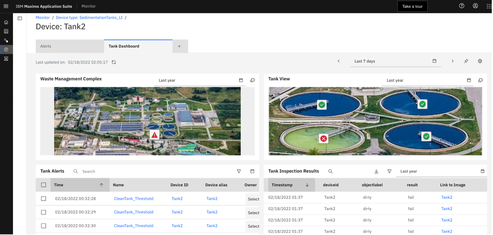
I can tell by the alerts that the tank is getting to a critical status. The table card shows a list of rows pertaining to events for the specified tanks, with attributes identifying clean or dirty tanks. You can check the score of confidence in the “Link to Image” column to substantiate the findings.
Action: Click the link against a tank identified as dirty
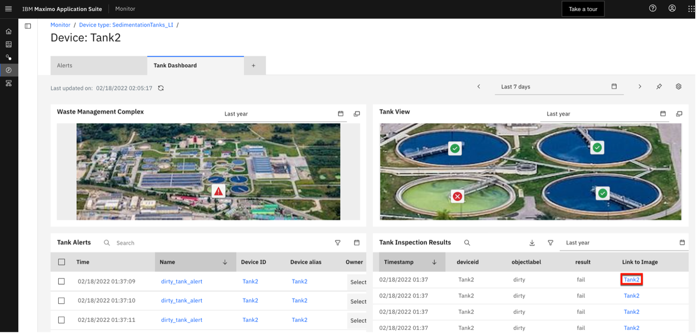
Note
When you click through to Maximo Visual Inspection, you MAY be taken to the login screen in a new browser window. Press continue, then CLOSE the tab, then click through again.
You can visualize a dirty tank and conclude a need for maintenance.
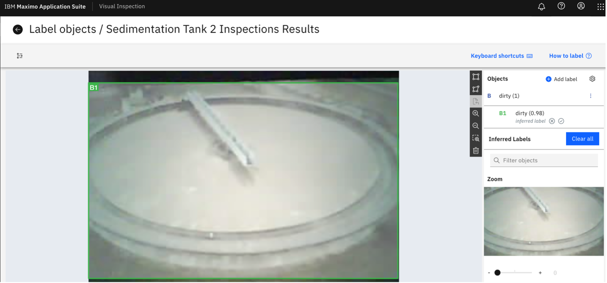
Action: Navigate back to Monitor and create a Service Request to clean the tank.
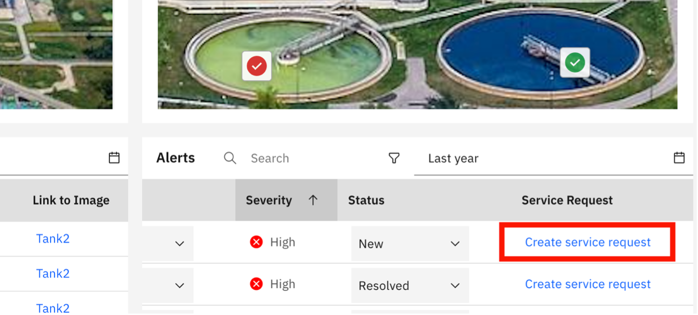
Now that I have verified the tank being dirty, I create a service order to address the finding.
Action: Create a service request for Tank2 either from the dashboard tab OR the alert tab
Pump Monitoring
Now I want to investigate my pumps.
Action: Select Pump under Change asset type to bring up the Pump summary dashboard or the monitor tab type in “Pump”. Then select the Pump tab. You can close the sidebar to increase the viewing area for the dashboard.
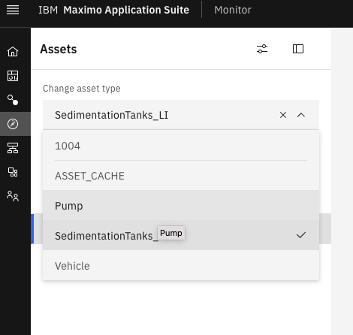 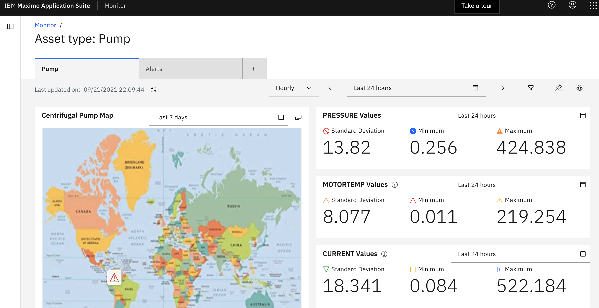
The summary dashboard shows me a global map of sites of pumps and metrics, and gives real-time insights on problems with my assets. Dashboards are fully customizable and allow the operations manager to scale across multiple sites in a single dashboard to identify most urgent and critical problems.
I see from the map that there were alerts against one of the pumps at that location.
Action:Hover over the anomaly on the map.
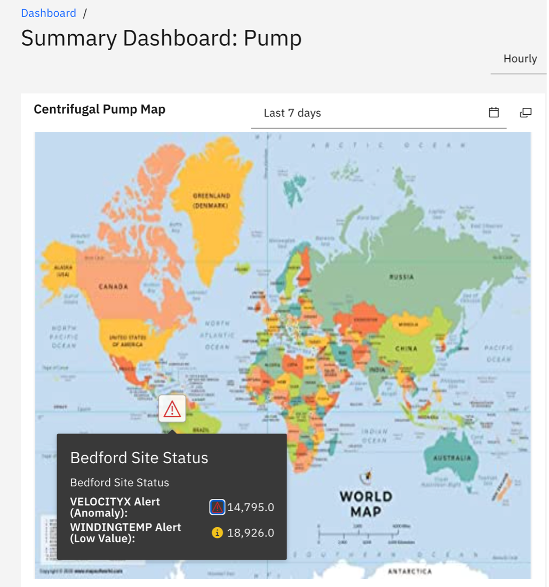
Note: Viewing dashboard from Dashboard tab on left.
I drill down into the Bedford site to see the summary dashboard for the pumps there.
Action: Filter on the Bedford site
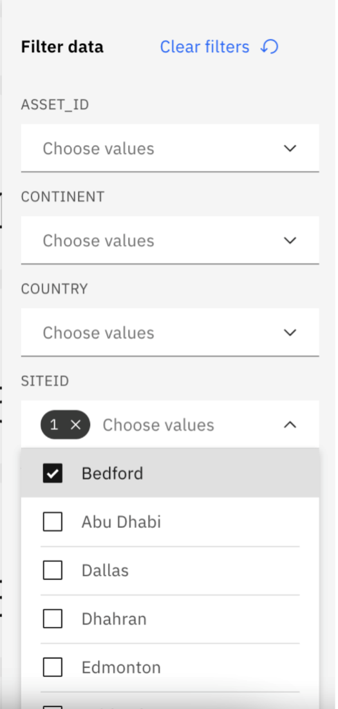
Action: Expand the alert card to full screen
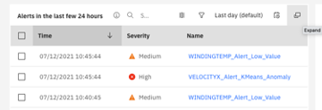
I will filter on the High severity alerts and see that there were recent alerts on Pump 005.
Action: Filter on High severity alerts
I drill in to take a closer look at Pump 005. Notice how the alert navigates to the time date where the anomaly happened in the asset dashboard.
Action: Click on PMPDEVICE005. Then select the “Asset Metrics Dashboard” tab.
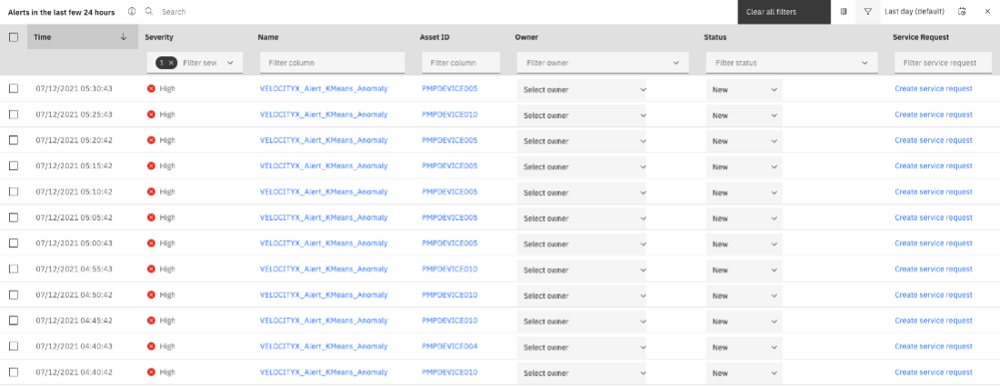
The site map saves me time by showing me where this pump is located on the Bedford site as well as the anomaly alerts. The picture of the pump shows me which part of the pump is experiencing a problem.
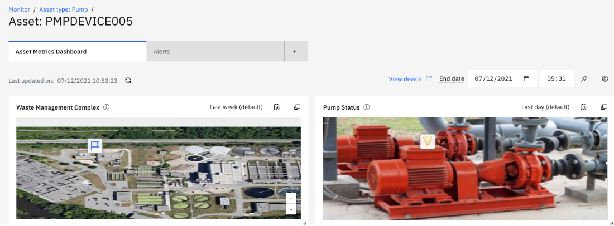
Review Asset History
I can easily look at the asset history in Maximo from the table card and see that there was service done several days ago on this pump. Perhaps, it was improperly serviced which is now causing the vibrations.
Action: Review Asset information in Maximo Manage. Right click on asset id link and open in new tab to see when the asset was serviced.
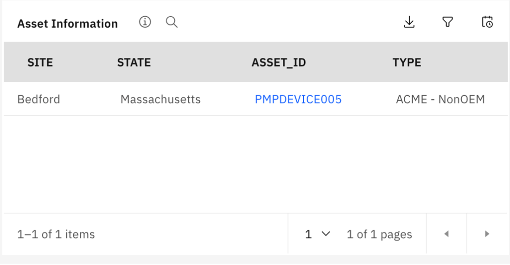
It looks like the water pump bearing housing and seals were replaced a couple days ago. The pump ran normal for the rest of the day, but then began to vibrate again in the evening.
Action: Click on Work tab. Filter on COMP to find the most recent work order.
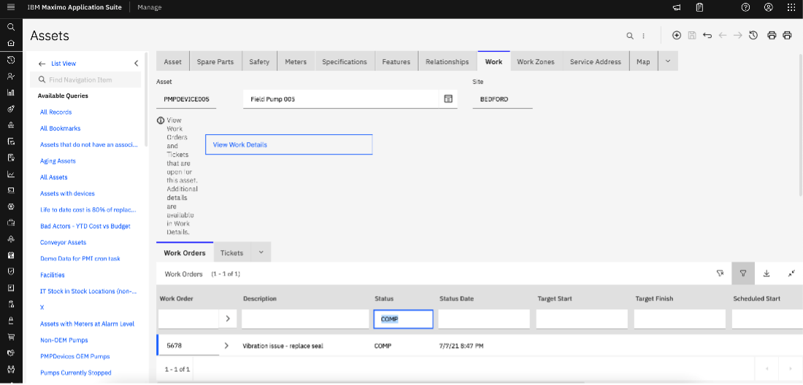
Having this data at hand, allows the operations engineer to gain insights on the history of the asset to make informed decisions on how to proceed with maintenance.
Alert Thresholds
I dig deeper into investigation of the problem by looking at the alerts. There are many alerts on this pump to look at. Monitor provides a paradigm shift from traditional threshold-based alerts that becomes overwhelming to AI powered anomaly alerts to remove the false positives. I filter on the high severity alerts and see there are just a few anomaly alerts.
Action: Go back to asset dashboard in monitor, Show alerts table
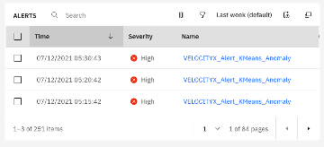
Vibration and Temperature are working in unison. The Vector is a combination of Velocity in the X, Y, Z axis. When all three experience exceptional vibration simultaneously there is something obviously very wrong with the asset.
Action: Navigate to the “Velocity – 7 day Average” card
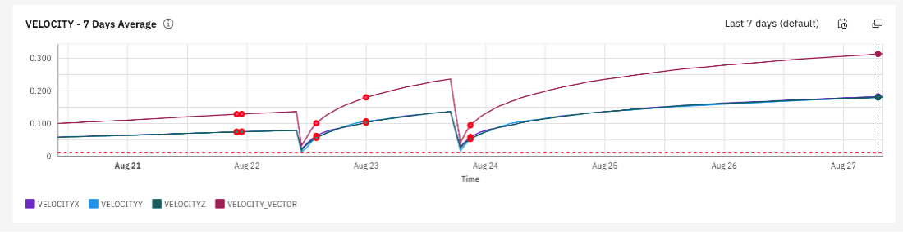
Create Service Request
I go back to the alerts and create a service request in Maximo for the Maintenance Supervisor to look at to see why vibrations have returned since the seals were recently replaced. The Technician will reinspect the pump since he thought he fixed the vibration issue the last time it was worked on.
Action: Go back to alert table, scroll the to the right side and click “Create Service Request”.
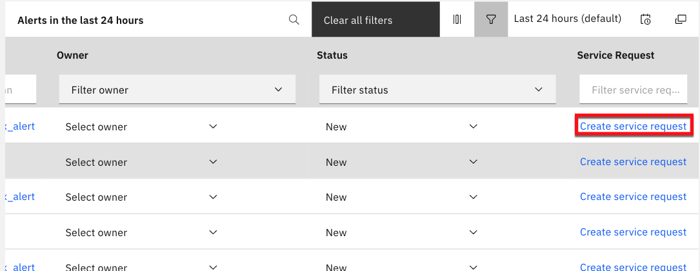
Action: Type in ROSE as the Reported By. This is used to trigger the escalations that process the Service Request’s to Work Order’s assigned to ELI for the mobile portion of the demo.
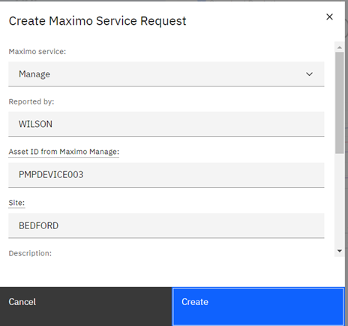
Anomaly Function
Let's go back to the asset type and we can see there are live metrics flowing into the system like the Velocity vector.
Action: Navigate to "Setup" in the left navigation and choose Pump
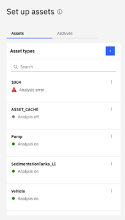
Action: Click on Set up device type and choose the Data tab.
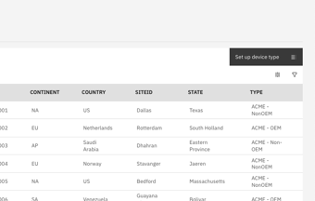
Action: Click on VELOCITYX
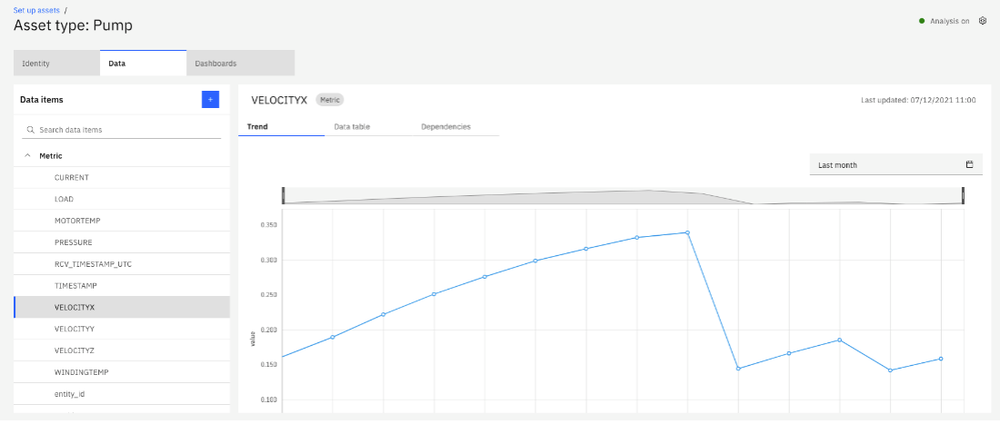
Built in AI models can be applied in Monitor with just a few clicks with no data science or development experience needed. Models can also be created in Watson Machine Learning and used with Monitor.
Action: View the different types of OOTB function that can be applied, or custom functions such as the vector. Or Anomaly models. Or pure python code.
TRANSITION: Now, I’m going to turn it over to the Asset Analyst that manages the models for the Maximo Application Suite.